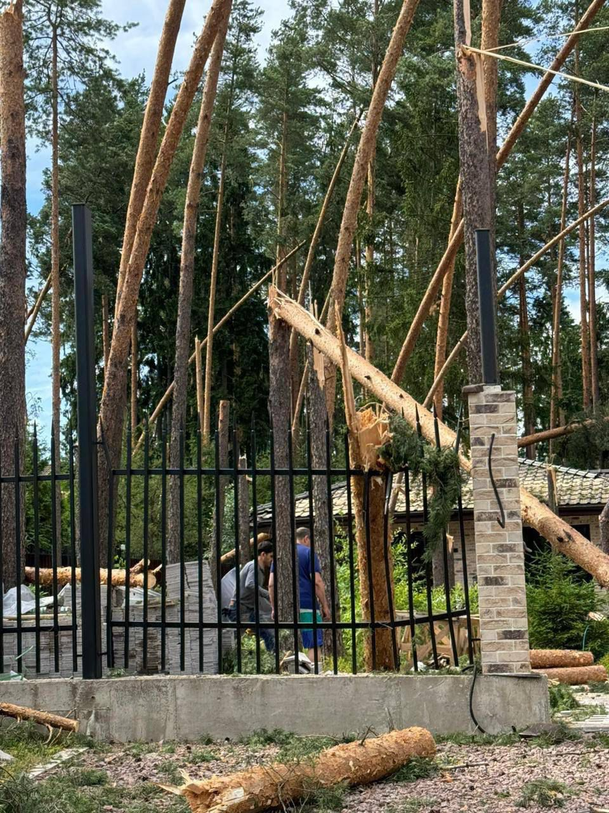
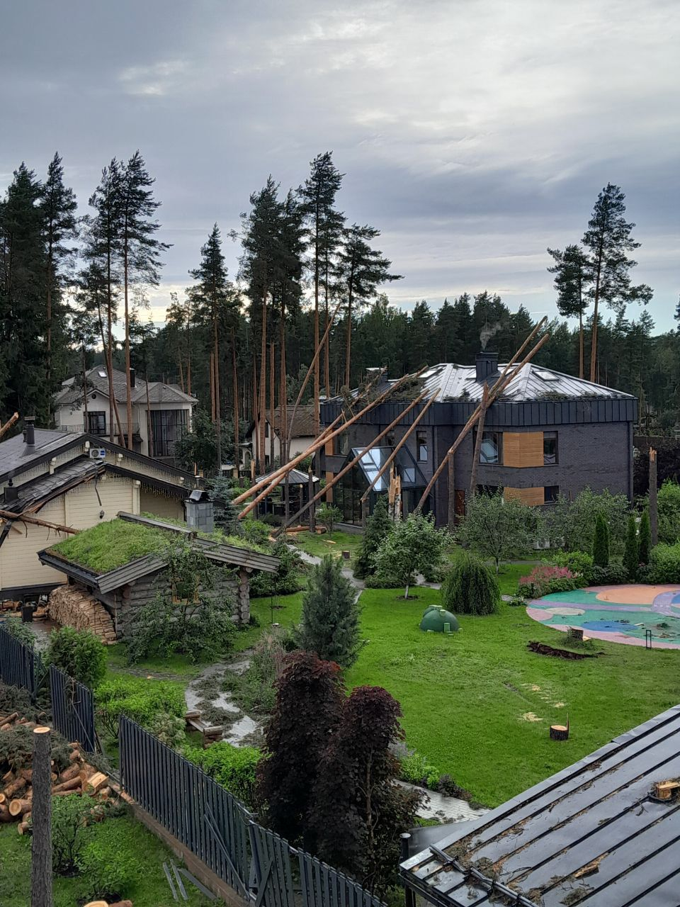

<!DOCTYPE html><html lang="ru"><head><meta charset="utf-8"><meta name="viewport" content="width=device-width, initial-scale=1"><meta name="description" content="Профессиональные услуги по спиливанию аварийных деревьев. Специалисты с опытом работы с 2017 года."><title>Услуги по спиливанию аварийных деревьев | Лесозаготовительная компания</title><link rel="preload" href="../../css-min/style.min.css" as="style"><link rel="preload" href="../js-bundle/service.bundle.js" as="script"><link rel="stylesheet" href="../../css-min/default.min.css"><link rel="stylesheet" href="../../css-min/normalize.min.css"><link rel="stylesheet" href="../../css-min/style.min.css"><link rel="preconnect" href="https://fonts.googleapis.com"><link rel="preconnect" href="https://fonts.gstatic.com" crossorigin><link href="https://fonts.googleapis.com/css2?family=Montserrat:ital,wght@0,100..900;1,100..900&amp;family=Playfair+Display:ital,wght@0,400..900;1,400..900&amp;family=Roboto:ital,wght@0,100..900;1,100..900&amp;display=swap" rel="stylesheet"></head></html><body><div class="page" itemscope itemtype="https://schema.org/WebPage"><div class="services-nav"><div class="services-nav__inner"><a class="services-nav__logo" href="../index.html"></a><a class="services-nav__phone" href="#">+7(123)-456-78-90</a></div><div class="services-nav__links"><a class="services-nav__link" href="#">Связь</a></div></div><main class="service" itemscope itemtype="https://schema.org/Service"><div class="service__inner"><article class="service-description" itemprop="description"><div class="service-description__inner"><nav class="service-tabs" role="tablist" aria-label="Виды услуг по спиливанию деревьев"> <button class="service-tab service-tab--active" role="tab" aria-selected="true" aria-controls="service-full" tabindex="0" id="tab-full">Спил целиком</button> <button class="service-tab" role="tab" aria-selected="false" aria-controls="service-parts" tabindex="-1" id="tab-parts">Спил частями</button> <button class="service-tab" role="tab" aria-selected="false" aria-controls="service-emergency" tabindex="-1" id="tab-emergency">Спил аварийных</button> <button class="service-tab" role="tab" aria-selected="false" aria-controls="service-fallen" tabindex="-1" id="tab-fallen">Удаление рухнувших</button></nav><section class="service-block service-block--active" id="service-full" role="tabpanel" aria-labelledby="service-full" tabindex="0" itemprop="hasOfferCatalog" itemscope itemtype="https://schema.org/OfferCatalog"> <button class="service-block__arrow service-block__arrow--up" data-block-index="0" aria-label="Предыдущий кейс"></button><article class="service-block__wrapper" itemprop="itemListElement" itemscope itemtype="https://schema.org/Offer"><figure class="service-block__image-inner" aria-label="Фотографии выполненных работ"><div class="service-block__image"></div><div class="service-block__image"></div><div class="service-block__image"></div><div class="service-block__image"></div></figure><div class="service-block__inner"><h2 class="service-block__name" itemprop="name">1Удаление аварийной, вывернутой с корня крупной березы, застрявшей прямо над крышей дома соседей. Была удалена без повреждения имущества.</h2><div class="service-block__description-inner" itemprop="description"><p>Наши специалисты оперативно ликвидировали сложный случай — <strong>крупную березу, вывернутую с корнями ураганом</strong>, которая зависла над крышей жилого дома. Дерево находилось в крайне неустойчивом положении: его падение могло повредить кровлю, электропроводку и припаркованные автомобили. Мы:</p><ul><li><strong>Разработали поэтапный план</strong> с учетом рисков;</li><li><strong>Применили метод контролируемого спиливания</strong> с завешиванием ветвей;</li><li><strong>Использовали автовышку и альпинистское оборудование</strong> для точной работы;</li><li><strong>Аккуратно утилизировали ствол и ветви</strong> без повреждения имущества.</li></ul><p><strong>Стоимость:</strong> <span itemprop="price">X</span> руб. (включена аренда спецтехники и утилизация)</p><p><strong>Затраченное время:</strong> Y часов (с учетом сложного доступа)</p><p><strong>Итог:</strong> Дерево удалено безопасно, соседские постройки сохранены.</p></div><div class="service-block__button-inner"><a class="service-block__button button" href="#" aria-label="Заказать услугу спила целиком" itemprop="url">Заказать услугу</a></div></div><div class="service-block__image-wrapper service-block__image-wrapper--mobile"><figure class="service-block__image-inner service-block__image-inner--mobile" aria-label="Фотографии выполненных работ (мобильная версия)"><div class="service-block__image service-block__image--mobile"></div><div class="service-block__image service-block__image--mobile"></div><div class="service-block__image service-block__image--mobile"></div><div class="service-block__image service-block__image--mobile"></div></figure></div></article><article class="service-block__wrapper" itemprop="itemListElement" itemscope itemtype="https://schema.org/Offer"><figure class="service-block__image-inner" aria-label="Фотографии выполненных работ"><div class="service-block__image"></div><div class="service-block__image"></div></figure><div class="service-block__inner"><h2 class="service-block__name" itemprop="name">Удаление аварийных деревьев в канаве, получивших уклон на строящийся дом после оборудования канавы в близи их корней.</h2><div class="service-block__description-inner" itemprop="description"><p>Наши специалисты выполнили <strong>срочное удаление деревьев</strong>, которые стали опасными после работ по обустройству дренажной канавы. Корневая система была повреждена, что вызвало критический наклон стволов в сторону строящегося дома. Для решения проблемы мы:</p><ul><li><strong>Провели экспертизу устойчивости</strong> каждого дерева;</li><li><strong>Применили комбинированную методику</strong> – спил частями с контролируемым опусканием ветвей;</li><li><strong>Использовали малую спецтехнику</strong> (из-за ограниченного пространства);</li><li><strong>Организовали параллельную вывозку древесины</strong> для ускорения процесса.</li></ul><p><strong>Стоимость:</strong> <span itemprop="price">X</span> руб. (с учетом сложного рельефа)</p><p><strong>Затраченное время:</strong> Y часов (в режиме повышенной опасности)</p><p><strong>Итог:</strong> Угроза устранена без повреждения стройплощадки, территория полностью расчищена.</p></div><div class="service-block__button-inner"><a class="service-block__button button" href="#" aria-label="Заказать услугу удаления деревьев в канаве" itemprop="url">Заказать услугу</a></div></div><div class="service-block__image-wrapper service-block__image-wrapper--mobile"><figure class="service-block__image-inner service-block__image-inner--mobile" aria-label="Фотографии выполненных работ (мобильная версия)"><div class="service-block__image service-block__image--mobile"></div><div class="service-block__image service-block__image--mobile"></div><div class="service-block__image service-block__image--mobile"></div><div class="service-block__image service-block__image--mobile"></div></figure></div></article> <button class="service-block__arrow service-block__arrow--down active" aria-label="Следующий кейс" data-block-index="0"></button></section><section class="service-block" id="service-parts" role="tabpanel" aria-labelledby="service-parts" tabindex="-1" itemprop="hasOfferCatalog" itemscope itemtype="https://schema.org/OfferCatalog"> <button class="service-block__arrow service-block__arrow--up" aria-label="Предыдущий кейс" data-block-index="1"></button><article class="service-block__wrapper" itemprop="itemListElement" itemscope itemtype="https://schema.org/Offer"><figure class="service-block__image-inner" aria-label="Фотографии выполненных работ"><div class="service-block__image"></div><div class="service-block__image"></div><div class="service-block__image"></div><div class="service-block__image"></div></figure><div class="service-block__inner"><h2 class="service-block__name" itemprop="name">2Удаление аварийной, вывернутой с корня крупной березы, застрявшей прямо над крышей дома соседей. Была удалена без повреждения имущества.</h2><div class="service-block__description-inner" itemprop="description"><p>Наши специалисты оперативно ликвидировали сложный случай — <strong>крупную березу, вывернутую с корнями ураганом</strong>, которая зависла над крышей жилого дома. Дерево находилось в крайне неустойчивом положении: его падение могло повредить кровлю, электропроводку и припаркованные автомобили. Мы:</p><ul><li><strong>Разработали поэтапный план</strong> с учетом рисков;</li><li><strong>Применили метод контролируемого спиливания</strong> с завешиванием ветвей;</li><li><strong>Использовали автовышку и альпинистское оборудование</strong> для точной работы;</li><li><strong>Аккуратно утилизировали ствол и ветви</strong> без повреждения имущества.</li></ul><p><strong>Стоимость:</strong> <span itemprop="price">X</span> руб. (включена аренда спецтехники и утилизация)</p><p><strong>Затраченное время:</strong> Y часов (с учетом сложного доступа)</p><p><strong>Итог:</strong> Дерево удалено безопасно, соседские постройки сохранены.</p></div><div class="service-block__button-inner"><a class="service-block__button button" href="#" aria-label="Заказать услугу спила целиком" itemprop="url">Заказать услугу</a></div></div><figure class="service-block__image-inner service-block__image-inner--mobile inactive" aria-label="Фотографии выполненных работ (мобильная версия)"><div class="service-block__image service-block__image--mobile"></div><div class="service-block__image service-block__image--mobile"></div><div class="service-block__image service-block__image--mobile"></div><div class="service-block__image service-block__image--mobile"></div></figure></article><article class="service-block__wrapper" itemprop="itemListElement" itemscope itemtype="https://schema.org/Offer"><figure class="service-block__image-inner" aria-label="Фотографии выполненных работ"><div class="service-block__image"></div><div class="service-block__image"></div></figure><div class="service-block__inner"><h2 class="service-block__name" itemprop="name">Удаление аварийных деревьев в канаве, получивших уклон на строящийся дом после оборудования канавы в близи их корней.</h2><div class="service-block__description-inner" itemprop="description"><p>Наши специалисты выполнили <strong>срочное удаление деревьев</strong>, которые стали опасными после работ по обустройству дренажной канавы. Корневая система была повреждена, что вызвало критический наклон стволов в сторону строящегося дома. Для решения проблемы мы:</p><ul><li><strong>Провели экспертизу устойчивости</strong> каждого дерева;</li><li><strong>Применили комбинированную методику</strong> – спил частями с контролируемым опусканием ветвей;</li><li><strong>Использовали малую спецтехнику</strong> (из-за ограниченного пространства);</li><li><strong>Организовали параллельную вывозку древесины</strong> для ускорения процесса.</li></ul><p><strong>Стоимость:</strong> <span itemprop="price">X</span> руб. (с учетом сложного рельефа)</p><p><strong>Затраченное время:</strong> Y часов (в режиме повышенной опасности)</p><p><strong>Итог:</strong> Угроза устранена без повреждения стройплощадки, территория полностью расчищена.</p></div><div class="service-block__button-inner"><a class="service-block__button button" href="#" aria-label="Заказать услугу удаления деревьев в канаве" itemprop="url">Заказать услугу</a></div></div></article><article class="service-block__wrapper" itemprop="itemListElement" itemscope itemtype="https://schema.org/Offer"><figure class="service-block__image-inner" aria-label="Фотографии выполненных работ"><div class="service-block__image"></div><div class="service-block__image"></div><div class="service-block__image"></div><div class="service-block__image"></div><div class="service-block__image"></div></figure><div class="service-block__inner"><h2 class="service-block__name" itemprop="name">Ликвидация последствий шторма: удалены аварийные деревьев, повредившие забор и кровлю дома</h2><div class="service-block__description-inner" itemprop="description"><p>После сильного шторма <strong>крупные деревья обрушились на частные владения</strong>, повредив забор и кровлю жилого дома. Наши специалисты оперативно:</p><ul><li><strong>Оценили масштаб разрушений</strong> и риски дальнейшего обрушения;</li><li><strong>Аккуратно распилили стволы</strong> частями с контролируемым спуском (чтобы не усугубить повреждения);</li><li><strong>Демонтировали застрявшие в крыше ветви</strong> без дополнительного ущерба;</li><li><strong>Организовали вывоз древесины</strong> и очистку территории;</li></ul><p><strong>Стоимость:</strong> <span itemprop="price">X</span> руб. (включен срочный выезд и утилизация)</p><p><strong>Затраченное время:</strong> Y часов (работы велись в режиме ЧС)</p><p><strong>Итог:</strong> Угроза устранена, владельцы смогли начать ремонт повреждений.</p></div><div class="service-block__button-inner"><a class="service-block__button button" href="#" aria-label="Заказать услугу ликвидации последствий шторма" itemprop="url">Заказать услугу</a></div></div></article> <button class="service-block__arrow service-block__arrow--down active" aria-label="Следующий кейс" data-block-index="1"></button></section><section class="service-block" id="service-emergency" role="tabpanel" aria-labelledby="tab-emergency" tabindex="-1" itemprop="hasOfferCatalog" itemscope itemtype="https://schema.org/OfferCatalog"> <button class="service-block__arrow service-block__arrow--up" aria-label="Предыдущий кейс" data-block-index="2"></button><article class="service-block__wrapper" itemprop="itemListElement" itemscope itemtype="https://schema.org/Offer"><figure class="service-block__image-inner" aria-label="Фотографии выполненных работ"><div class="service-block__image"></div><div class="service-block__image"></div><div class="service-block__image"></div><div class="service-block__image"></div></figure><div class="service-block__inner"><h2 class="service-block__name" itemprop="name">3Удаление аварийной, вывернутой с корня крупной березы, застрявшей прямо над крышей дома соседей. Была удалена без повреждения имущества.</h2><div class="service-block__description-inner" itemprop="description"><p>Наши специалисты оперативно ликвидировали сложный случай — <strong>крупную березу, вывернутую с корнями ураганом</strong>, которая зависла над крышей жилого дома. Дерево находилось в крайне неустойчивом положении: его падение могло повредить кровлю, электропроводку и припаркованные автомобили. Мы:</p><ul><li><strong>Разработали поэтапный план</strong> с учетом рисков;</li><li><strong>Применили метод контролируемого спиливания</strong> с завешиванием ветвей;</li><li><strong>Использовали автовышку и альпинистское оборудование</strong> для точной работы;</li><li><strong>Аккуратно утилизировали ствол и ветви</strong> без повреждения имущества.</li></ul><p><strong>Стоимость:</strong> <span itemprop="price">X</span> руб. (включена аренда спецтехники и утилизация)</p><p><strong>Затраченное время:</strong> Y часов (с учетом сложного доступа)</p><p><strong>Итог:</strong> Дерево удалено безопасно, соседские постройки сохранены.</p></div><div class="service-block__button-inner"><a class="service-block__button button" href="#" aria-label="Заказать услугу удаления аварийных деревьев" itemprop="url">Заказать услугу</a></div></div><figure class="service-block__image-inner service-block__image-inner--mobile inactive" aria-label="Фотографии выполненных работ (мобильная версия)"><div class="service-block__image service-block__image--mobile"></div><div class="service-block__image service-block__image--mobile"></div><div class="service-block__image service-block__image--mobile"></div><div class="service-block__image service-block__image--mobile"></div></figure></article><article class="service-block__wrapper" itemprop="itemListElement" itemscope itemtype="https://schema.org/Offer"><figure class="service-block__image-inner" aria-label="Фотографии выполненных работ"><div class="service-block__image"></div><div class="service-block__image"></div></figure><div class="service-block__inner"><h2 class="service-block__name" itemprop="name">Удаление аварийных деревьев в канаве, получивших уклон на строящийся дом после оборудования канавы в близи их корней.</h2><div class="service-block__description-inner" itemprop="description"><p>Наши специалисты выполнили <strong>срочное удаление деревьев</strong>, которые стали опасными после работ по обустройству дренажной канавы. Корневая система была повреждена, что вызвало критический наклон стволов в сторону строящегося дома. Для решения проблемы мы:</p><ul><li><strong>Провели экспертизу устойчивости</strong> каждого дерева;</li><li><strong>Применили комбинированную методику</strong> – спил частями с контролируемым опусканием ветвей;</li><li><strong>Использовали малую спецтехнику</strong> (из-за ограниченного пространства);</li><li><strong>Организовали параллельную вывозку древесины</strong> для ускорения процесса.</li></ul><p><strong>Стоимость:</strong> <span itemprop="price">X</span> руб. (с учетом сложного рельефа)</p><p><strong>Затраченное время:</strong> Y часов (в режиме повышенной опасности)</p><p><strong>Итог:</strong> Угроза устранена без повреждения стройплощадки, территория полностью расчищена.</p></div><div class="service-block__button-inner"><a class="service-block__button button" href="#" aria-label="Заказать услугу удаления деревьев в канаве" itemprop="url">Заказать услугу</a></div></div></article><article class="service-block__wrapper" itemprop="itemListElement" itemscope itemtype="https://schema.org/Offer"><figure class="service-block__image-inner" aria-label="Фотографии выполненных работ"><div class="service-block__image"></div><div class="service-block__image"></div><div class="service-block__image"></div><div class="service-block__image"></div><div class="service-block__image"></div></figure><div class="service-block__inner"><h2 class="service-block__name" itemprop="name">Ликвидация последствий шторма: удалены аварийные деревьев, повредившие забор и кровлю дома</h2><div class="service-block__description-inner" itemprop="description"><p>После сильного шторма <strong>крупные деревья обрушились на частные владения</strong>, повредив забор и кровлю жилого дома. Наши специалисты оперативно:</p><ul><li><strong>Оценили масштаб разрушений</strong> и риски дальнейшего обрушения;</li><li><strong>Аккуратно распилили стволы</strong> частями с контролируемым спуском (чтобы не усугубить повреждения);</li><li><strong>Демонтировали застрявшие в крыше ветви</strong> без дополнительного ущерба;</li><li><strong>Организовали вывоз древесины</strong> и очистку территории;</li></ul><p><strong>Стоимость:</strong> <span itemprop="price">X</span> руб. (включен срочный выезд и утилизация)</p><p><strong>Затраченное время:</strong> Y часов (работы велись в режиме ЧС)</p><p><strong>Итог:</strong> Угроза устранена, владельцы смогли начать ремонт повреждений.</p></div><div class="service-block__button-inner"><a class="service-block__button button" href="#" aria-label="Заказать услугу ликвидации последствий шторма" itemprop="url">Заказать услугу</a></div></div></article> <button class="service-block__arrow service-block__arrow--down active" aria-label="Следующий кейс" data-block-index="2"></button></section><section class="service-block" id="service-fallen" role="tabpanel" aria-labelledby="tab-fallen" tabindex="-1" itemprop="hasOfferCatalog" itemscope itemtype="https://schema.org/OfferCatalog"> <button class="service-block__arrow service-block__arrow--up" aria-label="Предыдущий кейс" data-block-index="3"></button><article class="service-block__wrapper" itemprop="itemListElement" itemscope itemtype="https://schema.org/Offer"><figure class="service-block__image-inner" aria-label="Фотографии выполненных работ"><div class="service-block__image"></div><div class="service-block__image"></div><div class="service-block__image"></div><div class="service-block__image"></div></figure><div class="service-block__inner"><h2 class="service-block__name" itemprop="name">4Удаление аварийной, вывернутой с корня крупной березы, застрявшей прямо над крышей дома соседей. Была удалена без повреждения имущества.</h2><div class="service-block__description-inner" itemprop="description"><p>Наши специалисты оперативно ликвидировали сложный случай — <strong>крупную березу, вывернутую с корнями ураганом</strong>, которая зависла над крышей жилого дома. Дерево находилось в крайне неустойчивом положении: его падение могло повредить кровлю, электропроводку и припаркованные автомобили. Мы:</p><ul><li><strong>Разработали поэтапный план</strong> с учетом рисков;</li><li><strong>Применили метод контролируемого спиливания</strong> с завешиванием ветвей;</li><li><strong>Использовали автовышку и альпинистское оборудование</strong> для точной работы;</li><li><strong>Аккуратно утилизировали ствол и ветви</strong> без повреждения имущества.</li></ul><p><strong>Стоимость:</strong> <span itemprop="price">X</span> руб. (включена аренда спецтехники и утилизация)</p><p><strong>Затраченное время:</strong> Y часов (с учетом сложного доступа)</p><p><strong>Итог:</strong> Дерево удалено безопасно, соседские постройки сохранены.</p></div><div class="service-block__button-inner"><a class="service-block__button button" href="#" aria-label="Заказать услугу удаления аварийных деревьев" itemprop="url">Заказать услугу</a></div></div><figure class="service-block__image-inner service-block__image-inner--mobile inactive" aria-label="Фотографии выполненных работ (мобильная версия)"><div class="service-block__image service-block__image--mobile"></div><div class="service-block__image service-block__image--mobile"></div><div class="service-block__image service-block__image--mobile"></div><div class="service-block__image service-block__image--mobile"></div></figure></article><article class="service-block__wrapper" itemprop="itemListElement" itemscope itemtype="https://schema.org/Offer"><figure class="service-block__image-inner" aria-label="Фотографии выполненных работ"><div class="service-block__image"></div><div class="service-block__image"></div></figure><div class="service-block__inner"><h2 class="service-block__name" itemprop="name">Удаление аварийных деревьев в канаве, получивших уклон на строящийся дом после оборудования канавы в близи их корней.</h2><div class="service-block__description-inner" itemprop="description"><p>Наши специалисты выполнили <strong>срочное удаление деревьев</strong>, которые стали опасными после работ по обустройству дренажной канавы. Корневая система была повреждена, что вызвало критический наклон стволов в сторону строящегося дома. Для решения проблемы мы:</p><ul><li><strong>Провели экспертизу устойчивости</strong> каждого дерева;</li><li><strong>Применили комбинированную методику</strong> – спил частями с контролируемым опусканием ветвей;</li><li><strong>Использовали малую спецтехнику</strong> (из-за ограниченного пространства);</li><li><strong>Организовали параллельную вывозку древесины</strong> для ускорения процесса.</li></ul><p><strong>Стоимость:</strong> <span itemprop="price">X</span> руб. (с учетом сложного рельефа)</p><p><strong>Затраченное время:</strong> Y часов (в режиме повышенной опасности)</p><p><strong>Итог:</strong> Угроза устранена без повреждения стройплощадки, территория полностью расчищена.</p></div><div class="service-block__button-inner"><a class="service-block__button button" href="#" aria-label="Заказать услугу удаления деревьев в канаве" itemprop="url">Заказать услугу</a></div></div></article><article class="service-block__wrapper" itemprop="itemListElement" itemscope itemtype="https://schema.org/Offer"><figure class="service-block__image-inner" aria-label="Фотографии выполненных работ"><div class="service-block__image"></div><div class="service-block__image"></div><div class="service-block__image"></div><div class="service-block__image"></div><div class="service-block__image"></div></figure><div class="service-block__inner"><h2 class="service-block__name" itemprop="name">Ликвидация последствий шторма: удалены аварийные деревьев, повредившие забор и кровлю дома</h2><div class="service-block__description-inner" itemprop="description"><p>После сильного шторма <strong>крупные деревья обрушились на частные владения</strong>, повредив забор и кровлю жилого дома. Наши специалисты оперативно:</p><ul><li><strong>Оценили масштаб разрушений</strong> и риски дальнейшего обрушения;</li><li><strong>Аккуратно распилили стволы</strong> частями с контролируемым спуском (чтобы не усугубить повреждения);</li><li><strong>Демонтировали застрявшие в крыше ветви</strong> без дополнительного ущерба;</li><li><strong>Организовали вывоз древесины</strong> и очистку территории;</li></ul><p><strong>Стоимость:</strong> <span itemprop="price">X</span> руб. (включен срочный выезд и утилизация)</p><p><strong>Затраченное время:</strong> Y часов (работы велись в режиме ЧС)</p><p><strong>Итог:</strong> Угроза устранена, владельцы смогли начать ремонт повреждений.</p></div><div class="service-block__button-inner"><a class="service-block__button button" href="#" aria-label="Заказать услугу ликвидации последствий шторма" itemprop="url">Заказать услугу</a></div></div></article> <button class="service-block__arrow service-block__arrow--down active" aria-label="Следующий кейс" data-block-index="3"></button></section></div></article></div></main><div class="service-popup" role="dialog" aria-modal="true" aria-hidden="true" aria-labelledby="popupTitle"><div class="service-popup__background" aria-label="Закрыть модальное окно"></div><div class="service-popup__inner"><h2 class="service-popup__title" id="popupTitle" style="display: none">Форма заказа услуги</h2><div class="service-popup__form"><div class="service-popup__form-group"> <label class="service-popup__label" for="popupName">Имя</label> <input class="service-popup__textform textform" type="text" name="name" id="popupName" placeholder="Ваше имя"/></div><div class="service-popup__form-group"> <label class="service-popup__label" for="popupPhone">Телефон</label> <input class="service-popup__textform textform" type="tel" name="phone" id="popupPhone" pattern="+7s?[(]{0,1}d{3}[)]{0,1}s?d{3}[-]{0,1}d{2}[-]{0,1}d{2}" placeholder="+7 (___) ___-__-__" inputmode="tel" maxlength="18" required="required" data-phone-pattern="+7 (___) ___-__-__" data-mask="+7 (###) ###-##-##"/></div><div class="service-popup__form-group"> <label class="service-popup__label" for="popupService">Услуга</label> <input class="service-popup__textform textform" type="text" name="service" id="popupService" placeholder="Название услуги"/></div> <button class="service-popup__button button" type="button">Отправить</button></div></div></div><script src="../js-bundle/service.bundle.js" defer></script></div></body>